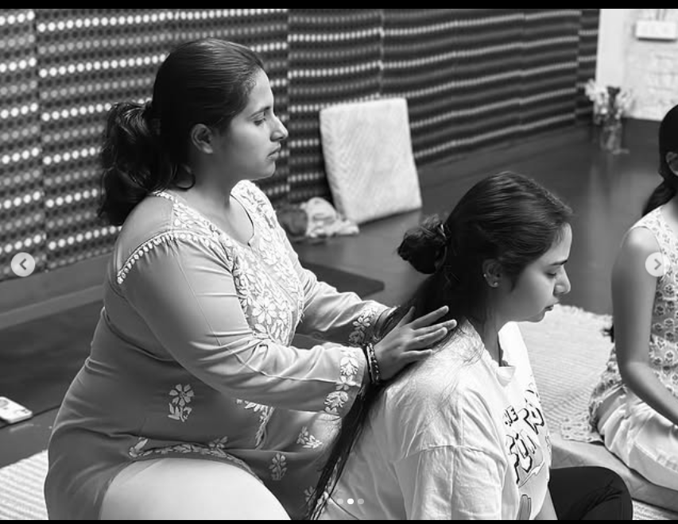

Single Reading
One question, held properly.
₹1,500
45 minutes · online
- Focused tarot reading on one theme
- Written summary of the spread
- One follow-up message within a week
Tarot · Counselling · Inner work
Aatman is Nupur's practice of tarot and counselling — a gentle, honest conversation that helps you make sense of where you are and choose what comes next.

About Nupur & Aatman
Aatman means the self — the part of you that already knows. For years I looked for language for what I was feeling, and found it slowly, through cards, conversation and a lot of unlearning. Today I hold that same space for others: no predictions dressed up as destiny, no advice you didn't ask for. Just a careful, warm reading of where you stand and what is actually within your reach.
Every session blends tarot as a mirror with counselling grounded in listening. You leave with clarity you can act on — not more confusion to carry.

A short introduction
Who this is for
You don't need a crisis to come here. Most people arrive somewhere in the middle — functioning, but tired of guessing.
A decision about work, a city, or a relationship that you keep circling without landing.
Patterns that repeat with different people, and the quiet sense that something underneath is unfinished.
An ending you haven't had space to feel properly — and no one to say it out loud to.
A restlessness that shows up in the body first, long before you can name it.
You're the steady one for your family and friends, and rarely the one being held.
Nothing is wrong — you simply want to know yourself more honestly than you do today.
Methods adopted
Nothing here is mystical for the sake of it. Each method has a purpose, and sessions borrow from all four as needed.
Cards used to open a conversation, not to predict a fixed future. They give shape to what you already sense.
Grounded, non-judgemental dialogue that follows your pace, holds your history, and asks better questions.
Simple journalling and inquiry practices between sessions so insight becomes something you live, not just hear.
Short somatic practices to settle the nervous system when the mind is moving faster than the body can follow.
Offerings
Start with a single reading, or walk a longer road. All sessions are one-to-one and completely confidential.
One question, held properly.
₹1,500
45 minutes · online
For a chapter that needs untangling.
₹5,400
4 sessions · 60 minutes each
Pure conversation, no cards.
₹2,200
60 minutes · online or in person
Not sure which fits? Write in and Nupur will help you choose.
Join the community
A 20-minute introductory conversation, at no cost — to see how this feels before you commit to anything. Leave your details and Nupur will write back with a time.
A quiet help group — weekly reflections, card pulls and gentle check-ins. Free to join, no pressure to book.
Join WhatsApp group